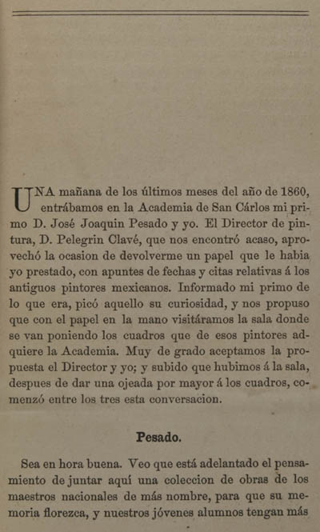

|  |
Una mañana de los últimos meses del año de 1860, entrábamos en la Academia de San Cárlos mi primo D. José Joaquin Pesado y yo. El Director de pintura, D. Pelegrin Clavé, que nos encontró acaso, aprovechó la ocasion de devolverme un papel que le habia yo prestado, con apuntes de fechas y citas relativas á los antiguos pintores mexicanos. Informado mi primo de lo que era, picó aquello su curiosidad, y nos propuso que con el papel en la mano visitáramos la sala donde se van poniendo los cuadros que de esos pintores adquiere la Academia. Muy de grado aceptamos la propuesta el Director y yo; y subido que hubimos á la sala, despues de dar una ojeada por mayor á los cuadros, comenzó entre los tres esta conversacion. Pesado Sea en hora buena. Veo que está adelantado el pensamiento de juntar aquí una coleccion de obras de los maestros nacionales de más nombre, para que su memoria florezca, y nuestros jóvenes alumnos tengan más |
| Principio | 1 | 2 | 3 | 4 | 5 | 6 | 7 | ... | 105 | Siguiente |
||
| Arriba |
||||||||||||